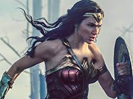

About Wonder Woman
Wonder Woman is a princess from a secret island of Amazon women. She has an Ariel moment and wants to "be where the people are" after the island was attacked from her first experience with "men".
Wonder Woman in action
Wonder Woman's Characteristics
- She is at the top of her people in skill
- She feels responsible for the honor and safety of her people
- She has NO idea how the world outside of her island works and is known as Diana Prince
Friends
Wonder Woman, lika all heros, cannot do it all on her own. She is helped in her life by many people, including those who raised and trained her in Amazonian Combat. Click on the links below to read more about them.